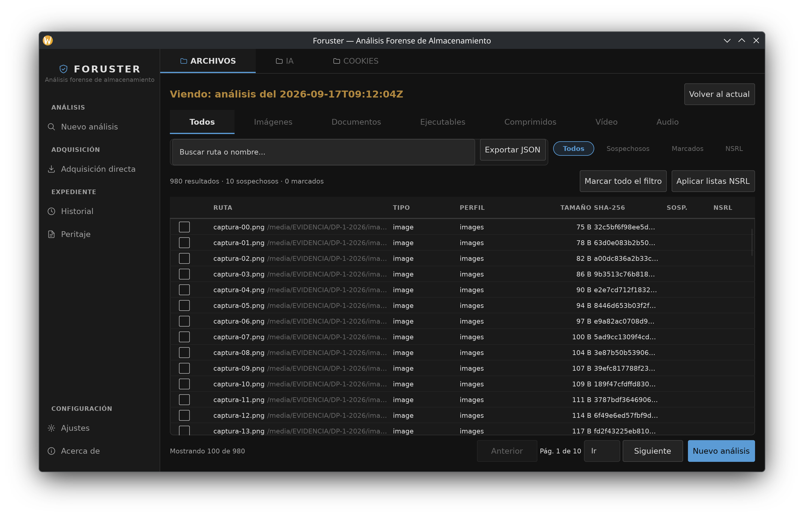
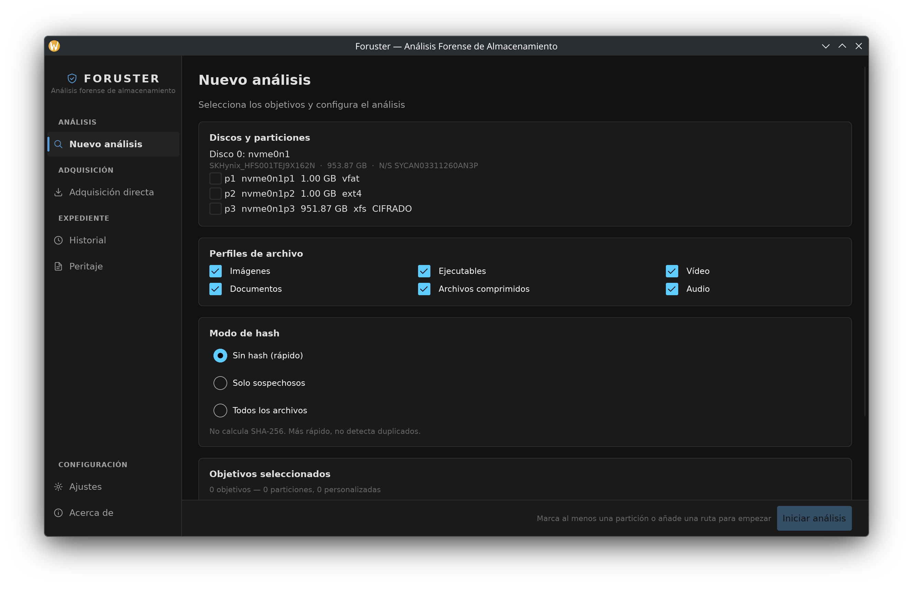

Copia la memoria y los archivos de un ordenador encendido, y deja constancia de qué se recogió, cuándo y quién lo hizo.

No escribe nada en el equipo, no instala nada y no deja rastro de haber estado ahí.
Se pierde al apagar, así que se copia antes que nada. Después van los archivos que hagan falta.
El expediente va firmado, y un perito de la otra parte lo verifica con herramientas corrientes.
Cuatro pasos, sin salir de la herramienta.
Expediente, unidad y operador. Sin esos datos no empieza, y quedan escritos dentro de la propia prueba.
Primero la memoria, después los archivos elegidos. Cada copia lleva su hash desde el momento en que se hace.
La cadena enseña si algo ha cambiado. La firma dice quién lo recogió.
Un PDF para adjuntar al dictamen. El mismo expediente da siempre el mismo informe.

La otra parte puede revisar el trabajo sin instalar Foruster ni fiarse de él.
Los discos se abren en solo lectura y no se instala nada, así que el original llega al perito como estaba.
Con herramientas corrientes y sin ejecutar Foruster, porque se firma el manifiesto tal y como queda guardado.
Un archivo que no se pudo leer marca el expediente como incompleto y aparece en el informe.
Trabajo de laboratorio y actuaciones en campo. Un solo binario, sin instalación, para el kit portátil.
Un informe que se sostiene como base del dictamen y una firma que la parte contraria puede verificar por su cuenta.
Se la enseñamos con un caso real. También hablamos de evaluación y de condiciones de licencia.
Escríbanos